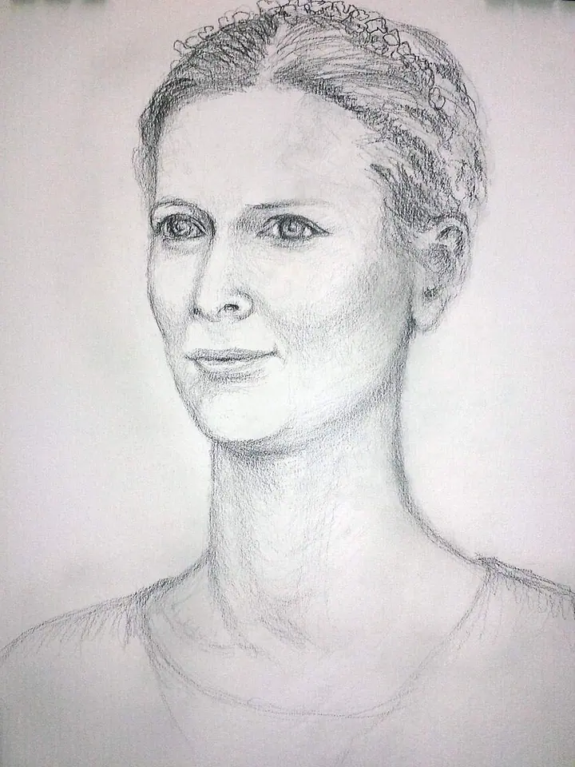
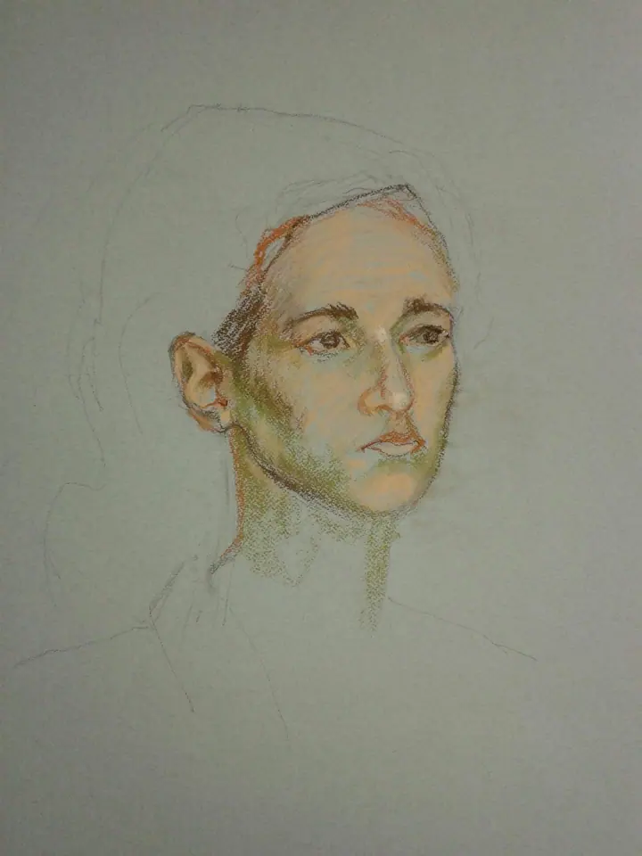
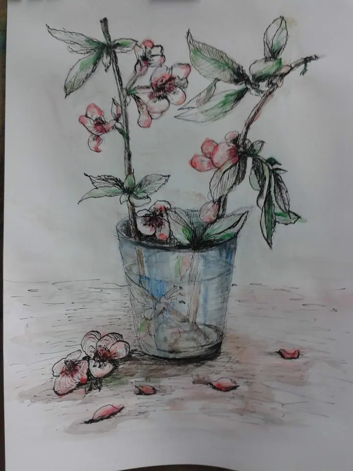
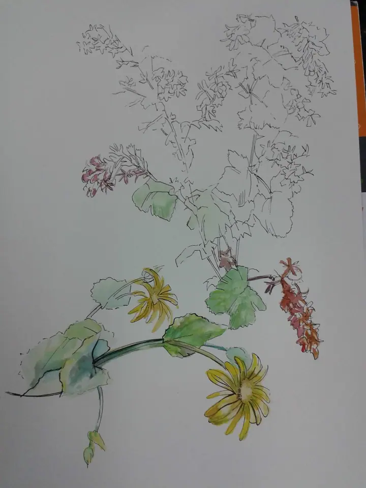
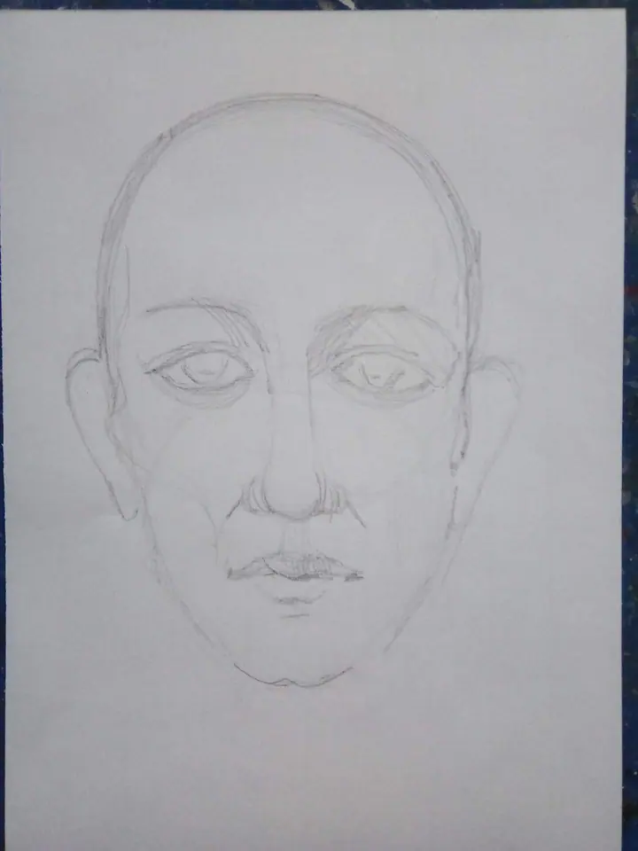
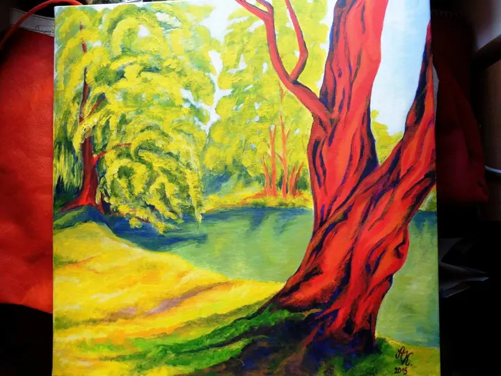

Základy kresby a malování
Učím základy kresby a malování v ateliéru Praga Prima na Národní 35. Kreslíme zátiší, květiny i předměty tužkou, tuší a akvarelem.





Jmenuji se Lukáš Bradáček a učím základy kresby a malování, a to nejen portrétu lidí. Výuka se odehrává v ateliéru Praga Prima na Národní 35 v Praze.
Více o mně
„Výuka základů kresby a malování nejen Portrétu lidí.“
— Lukáš Bradáček
Učím základy kresby a malování v ateliéru Praga Prima na Národní 35. Kreslíme zátiší, květiny i předměty tužkou, tuší a akvarelem.
Výuka se netočí jen kolem portrétu lidí, ale portrét v ní má své pevné místo. Postupně se dostaneme od stavby hlavy až k hotové kresbě.
Učím základy kresby a malování. Začínáme u jednoduchých věcí, jako je větvička, konvice nebo květina ve skleničce, a postupně se dostáváme k náročnějším námětům.
Velkou část výuky věnuji portrétu. Od první stavby hlavy tužkou se dá dojít až k portrétu v pastelu, kde už pracujete se světlem a barvou pleti.
Výuka probíhá v prostorách ateliéru Praga Prima na Národní 35 v Praze 1. Kreslí se tužkou, tuší, akvarelem i pastelem a kdo chce, může zkusit malbu barvami.
Ozvěte se e-mailem a napište, co byste se chtěli naučit a jaké máte zkušenosti.
První kresby jsou jednoduché: linka, tvar a stín na předmětech a květinách.
Naučíte se stavět hlavu, rozmístit oči, nos a ústa a postupně kresbu dotáhnout.
Ke kresbě tužkou přidáme tuš, akvarel nebo pastel, podle toho, co vás baví.
Ne. Výuka je zaměřená na základy kresby a malování, takže začínáme od jednoduchých věcí.
Ne, portrét je jen jedna část. Kreslíme a malujeme i zátiší, květiny nebo krajinu.
V ateliéru Praga Prima na Národní 35 v Praze 1.
Napište mi na atelierpp@volny.cz a domluvíme se na podrobnostech.
atelierpp@volny.cz
Praha 1